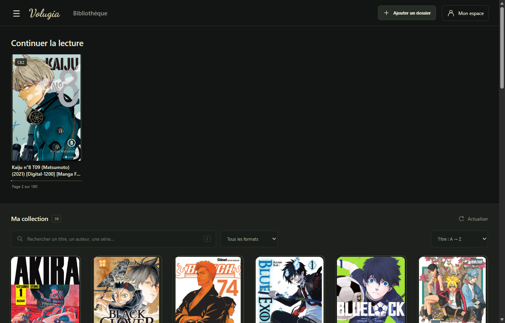
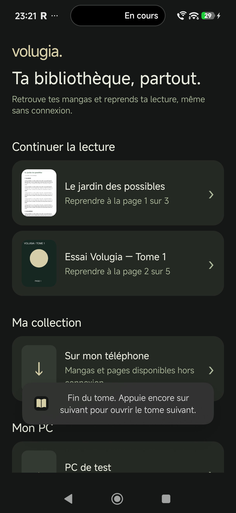
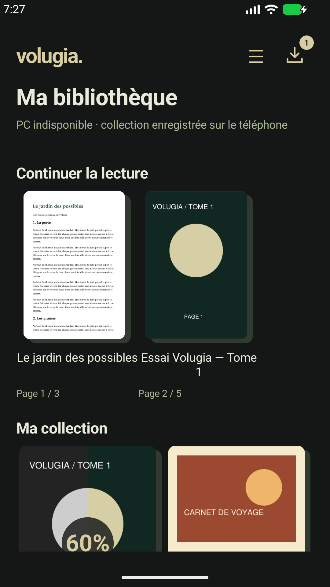
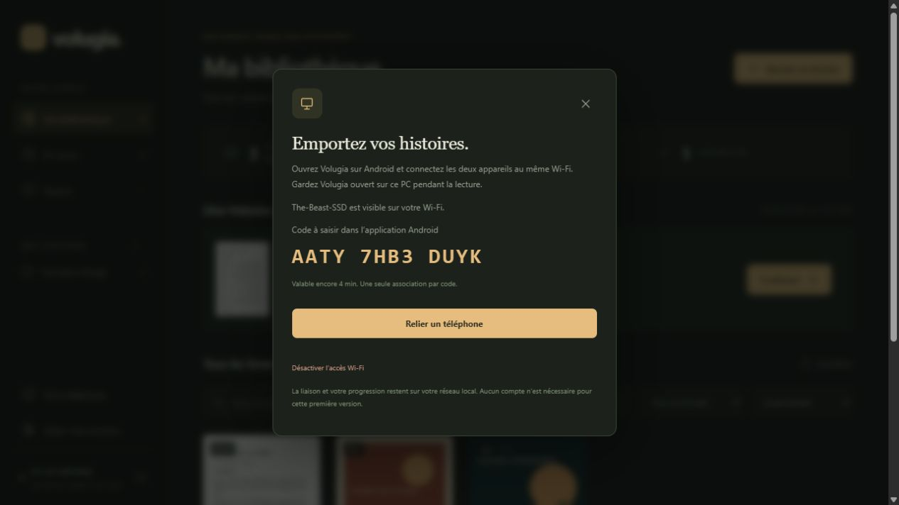
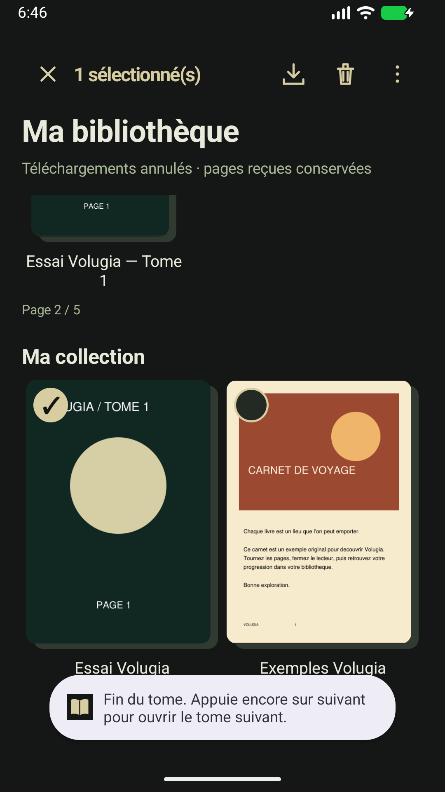

100% Local & Privé
Aucun fichier n'est téléversé vers un serveur tiers. La base de données SQLite et les images restent exclusivement sur votre ordinateur. L'application fonctionne sans connexion Internet.
Volugia réunit votre PC Windows et votre smartphone Android autour de votre collection personnelle. Zéro serveur distant obligatoire, zéro abonnement et aucune publicité : vos fichiers restent chez vous, et vos lectures se synchronisent instantanément sur votre réseau local.


Contrairement aux plateformes dépendantes du cloud, Volugia place votre autonomie au centre. Vous possédez vos livres, votre matériel et vos données.
Aucun fichier n'est téléversé vers un serveur tiers. La base de données SQLite et les images restent exclusivement sur votre ordinateur. L'application fonctionne sans connexion Internet.
Le PC héberge votre bibliothèque sur votre réseau local. Votre téléphone Android s'y associe d'un geste pour lire en streaming local ou télécharger vos tomes pour vos déplacements.
Une application Windows portable et réactive. Un lecteur Android développé en Java pur sans WebView lourde : vitesse maximale, zoom fluide et zéro consommation batterie inutile.
De la gestion intelligente de vos dossiers à la lecture page par page, chaque détail est pensé pour le confort.
Ajoutez simplement le dossier de votre disque contenant vos BDs et mangas. Volugia parcourt les sous-dossiers et organise automatiquement votre collection par séries.
T01, Tome 1, V001, Vol 1) pour afficher la meilleure couverture..cbz, Volugia identifie son format interne réel.Emportez vos lectures au creux de la main. L'application Android offre une interface Java native et un lecteur taillé pour une fluidité absolue.

Oubliez les configurations réseau complexes, les ouvertures de ports ou les adresses IP à retenir. Volugia gère tout de manière sécurisée et invisible.

Une interface sombre, épurée et soignée, pensée pour mettre vos couvertures et vos lectures en valeur.
Reprise rapide avec "Continuer la lecture", vue en grille de séries, recherche instantanée et filtres par format.
Accès direct aux lectures en cours, consultation des tomes synchronisés et navigation hors-ligne fluide.
La couverture grise retrouve sa couleur au fil des pages téléchargées. Simple, élégant et sans animation superflue.

Coches sur les couvertures pour télécharger, suspendre ou retirer plusieurs mangas d'un seul geste.
Code de 12 caractères généré sur le PC pour sceller la liaison TLS avec le smartphone sans manipulation complexe.
Moins de 2 minutes suffisent pour configurer votre bibliothèque et commencer à lire sur tous vos écrans.
Lancez Volugia.exe sur votre PC. Cliquez sur Ajouter un dossier et sélectionnez
le répertoire contenant vos tomes. Vos sous-dossiers sont analysés automatiquement.
Sur le PC, cliquez sur Mon espace → Mes appareils → Relier un téléphone. Sur Android, ouvrez l'application, sélectionnez le PC détecté et entrez le code de 12 caractères.
Lisez confortablement sur votre moniteur ou lancez le téléchargement de vos séries sur Android pour les savourer n'importe où, même sans réseau.
Conçu pour s'adapter à vos fichiers existants sans nécessiter de conversion fastidieuse.
ComicInfo.xml.
.cbz.
Des réponses claires et transparentes sur le fonctionnement de l'application.
Non, absolument jamais. Volugia est une application strictement « Local-First ». Vos fichiers restent sur votre PC et sont servis uniquement à votre téléphone via votre réseau Wi-Fi local (ou via un canal P2P direct et chiffré si vous activez l'accès distant). Aucun fichier n'est transmis à un serveur cloud.
Non. Vous pouvez utiliser Volugia sur votre PC et relier votre téléphone Android via votre réseau local sans jamais créer de compte ni renseigner d'adresse e-mail. L'option de compte partagé (local ou Google) est strictement facultative et sert uniquement à faciliter la gestion de plusieurs appareils.
Oui, à 100%. Sur le PC, Volugia n'a besoin d'aucun accès Web pour fonctionner. Sur Android, dès lors que vous avez téléchargé vos tomes ou vos séries via le Wi-Fi, vous pouvez lire en mode avion, dans le train ou en pleine nature sans aucune connexion.
Non. Volugia ne modifie, ne renomme et n'extrait jamais vos archives sur le disque.
Les métadonnées, séries et progressions sont enregistrées dans une base SQLite indépendante (data/library.sqlite).
Si vous retirez un dossier de Volugia, vos fichiers originaux restent intacts à leur emplacement.
Oui ! Volugia intègre un outil de migration intelligent. Il détecte automatiquement les bases SQLite de YACReader, Calibre, Komga ou Kavita, prévisualise les correspondances avec vos livres et importe votre progression (pages lues, favoris, statuts) en créant une sauvegarde préalable automatique.
Il suffit de posséder Windows 10 ou 11 (64 bits) avec Microsoft WebView2 (déjà préinstallé par défaut sur la quasi-totalité des PC Windows).
Vous n'avez pas besoin d'installer Python : Volugia.exe est un exécutable autonome qui intègre son propre environnement d'exécution.
L'application Android est compatible avec Android 8.0 (Oreo) et toutes les versions ultérieures (jusqu'à Android 16). Elle est légère (moins de 200 Ko) et ne dépend d'aucun service tiers lourd.
Téléchargez Volugia gratuitement pour votre ordinateur et votre smartphone.
Application autonome portable pour Windows 10 & 11 (64-bit). Aucune installation de Python requise.
Obtenir Volugia Windows (exe) Conservez simplement l'exécutable et son dossierdata ensemble.
Application native Java ultra-rapide. Compatible Android 8.0 et versions supérieures.
Télécharger Volugia-Android.apk Installation directe APK. Mises à jour conservant vos lectures.